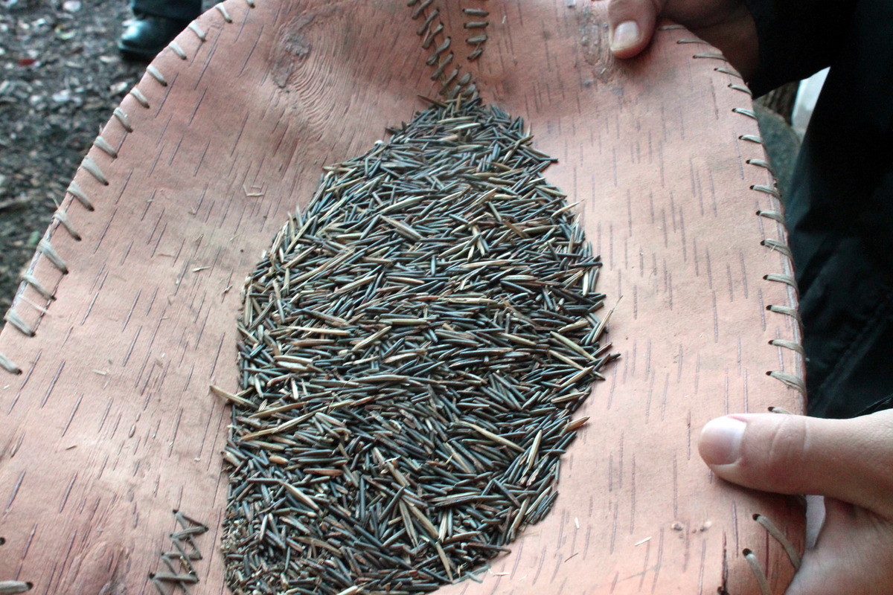

Wild Rice or known as "manoomin" in Ojibwe means good-berry. Its a grain that has a cultural significance to the Anishinaabe people its is found in the Great Lakes Region in The United States as well as Canada. How the Anishinaabe came across this grain is a interesting tale. The Ojibwe people originated from the east coast and a prophecie said that a light skin people will come and destroy the land and it said, "go west till you find the giver of life that grows on the water."
